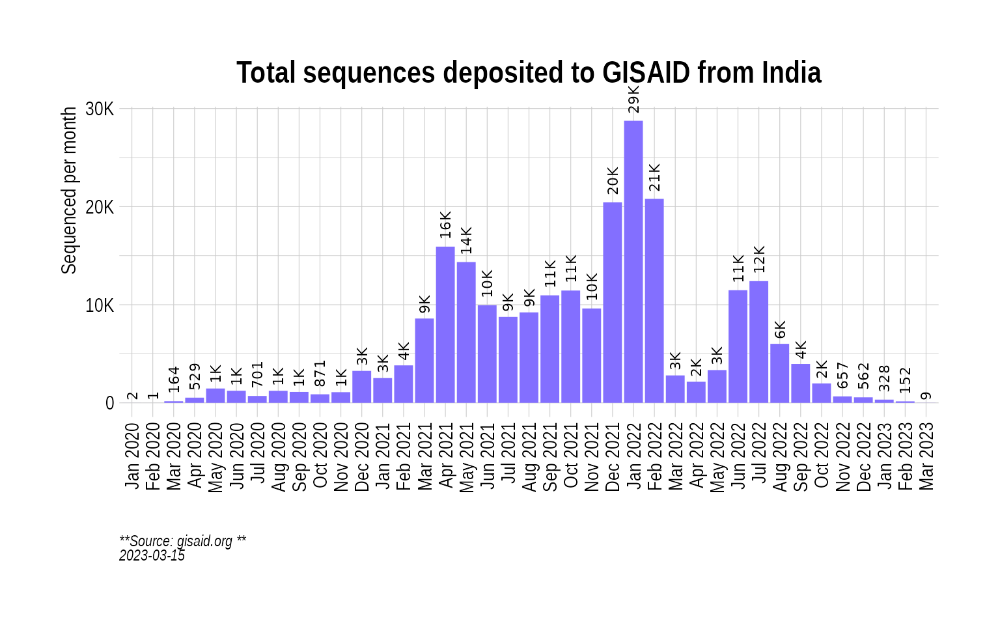
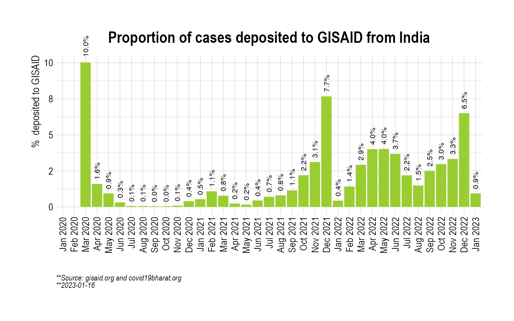
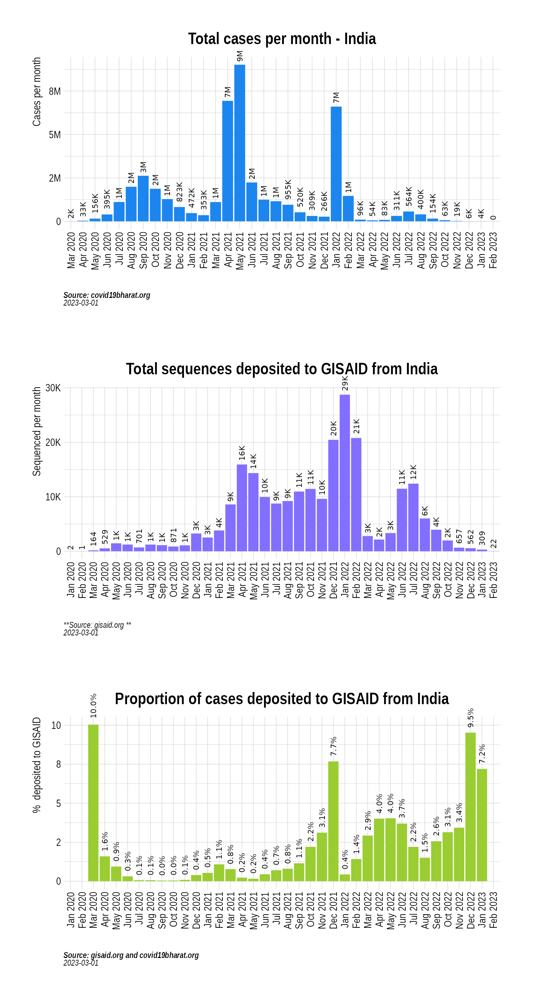
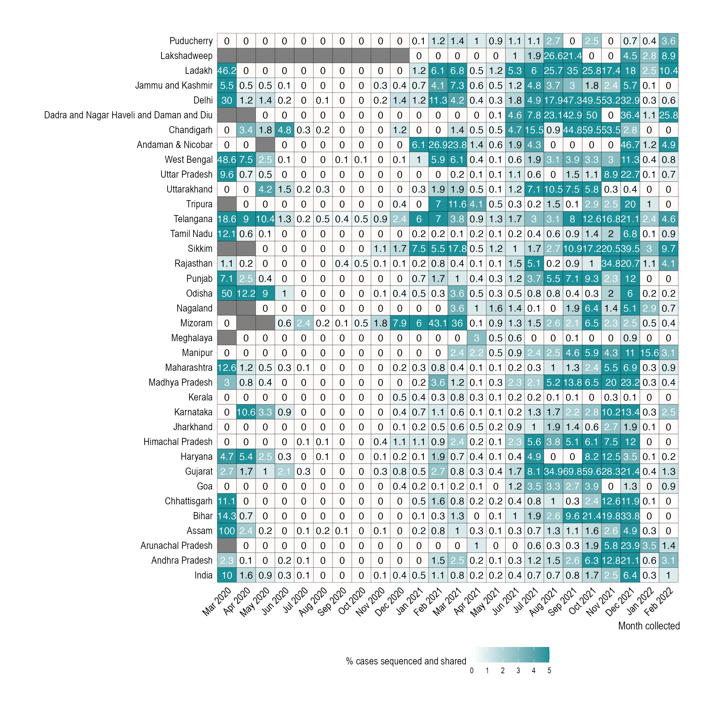
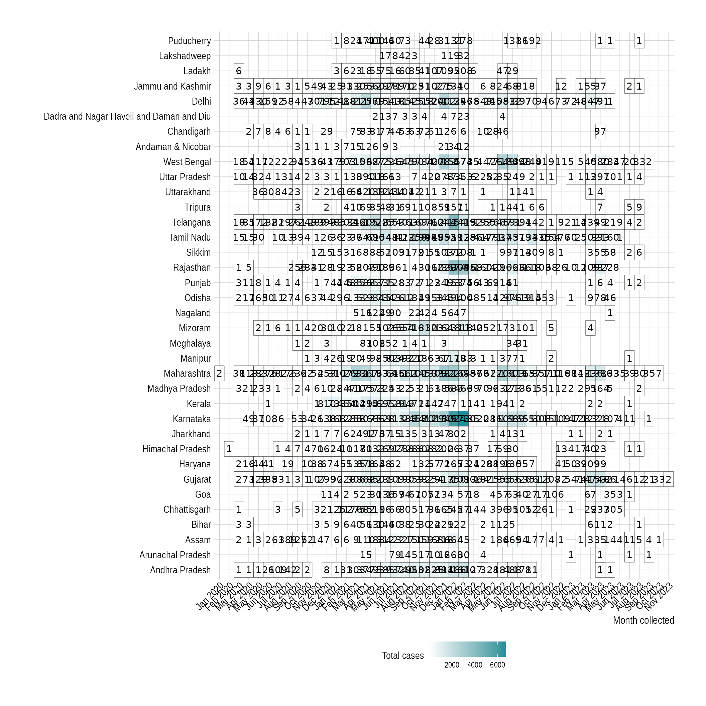

Get cases data
We use covid19bharat.org to get a tally of daily confirmed cases and then summarize it to monthly level.
indian_state_cases <- GetIndiaConfirmedCasesMonthlyLong()
india_cases <- indian_state_cases %>% filter(State == "India")
head(india_cases)## MonthYear State value type
## 1 Mar 2020 India 1635 Confirmed
## 2 Apr 2020 India 33232 Confirmed
## 3 May 2020 India 155781 Confirmed
## 4 Jun 2020 India 395044 Confirmed
## 5 Jul 2020 India 1111273 Confirmed
## 6 Aug 2020 India 1990350 ConfirmedRead variant data from GISAID
We utilize GISAID data to look at prevalence of variants. To access this data, GISAID requires registration.
current_date <- "2022_09_10"
fpath.tar <- paste0("~/github/2021_Covid19_surveillance/data/all_metadata/metadata_tsv_", current_date, ".tar.xz")
fpath.qs <- paste0("~/github/2021_Covid19_surveillance/data/all_metadata/metadata_tsv_", current_date, ".qs")
if (file.exists(fpath.qs)) {
gisaid_metadata <- qs::qread(file = fpath.qs)
} else {
gisaid_metadata <- ReadGISAIDMetada(path = fpath.tar)
qs::qsave(gisaid_metadata, fpath.qs)
}Plot total sequenced cases
We can look at the absolute number of cases that have been sequenced from a country by filtering out information from the metadata made available by GISAID (which includes all countries). Here, we visualize the total sequenced cases coming from India:
gisaid_india <- FilterGISAIDIndia(gisaid_metadata_all = gisaid_metadata)
country_seq_stats <- TotalSequencesPerMonthCountrywise(gisaid_india, rename_country_as_state = TRUE)
p2 <- BarPlot(country_seq_stats, ylabel = "Sequenced per month", color = "slateblue1", label_si = TRUE, title = "Total sequences deposited to GISAID from India", caption = "**Source: gisaid.org <br>**")
p2
Overall, how much has India sequenced over months?
While the absolute numbers are informative, a more useful metric is the proportion of cases (cases sequenced over total cases) that are getting sequenced. Here we look at the proportion of cases that have been sequenced in India over the course of the pandemic:
india_cases_long <- GetIndiaConfirmedCasesMonthlyLong() %>% filter(State == "India")
india_sequencing_proportion <- CombineSequencedCases(
cases_sequenced = country_seq_stats,
confirmed_long = india_cases_long
)
p3 <- BarPlot(india_sequencing_proportion, yaxis = "percent_sequenced_collected", ylabel = "% deposited to GISAID", color = "yellowgreen", title = "Proportion of cases deposited to GISAID from India", caption = "**Source: gisaid.org and covid19bharat.org<br>**")
p3
For more context, we can combine all the three plots at once:
p1 / p2 / p3
Plot proportion of cases that been deposited from each state
We can further break down the proportion of sequenced cases at the state level:
state_seq_stats <- TotalSequencesPerMonthStatewise(gisaid_india, drop_country = TRUE)
seq_stats <- rbind(country_seq_stats, state_seq_stats)
state_cases_long <- GetIndiaConfirmedCasesMonthlyLong()
india_sequencing_proportion <- CombineSequencedCases(
cases_sequenced = seq_stats,
confirmed_long = state_cases_long,
month.min = "Feb 2020",
month.max = "July 2022",
max.percent = 5
)
india_sequencing_proportion$State <- factor(
x = india_sequencing_proportion$State,
levels = as.character(GetIndianStates())
)
p4 <- PlotSequencedPropHeatmap(india_sequencing_proportion)
p4
Plot Prevalence
Finally, we look at the prevalence of variants and variants of concern (VOCs):
india_month_counts <- SummarizeVariantsMonthwise(gisaid_india)
india_month_counts$State <- "India"
india_month_prevalence <- CountsToPrevalence(india_month_counts)
vocs <- GetVOCs()
omicron <- vocs[["omicron"]]
vocs[["omicron"]] <- NULL
custom_voc_mapping <- list(
`BA.1.1` = "BA.1",
`BA.1` = "BA.1",
`BA.2` = "BA.2",
`BA.2.10` = "BA.2",
`BA.2.10.1` = "BA.2",
`BA.2.12` = "BA.2",
`BA.2.12.1` = "BA.2",
`BA.3` = "BA.3",
`BA.4` = "BA.4",
`BA.5` = "BA.5",
`BA.2.74` = "BA.2.74",
`BA.2.75` = "BA.2.75",
`BA.2.76` = "BA.2.76"
)
india_month_prevalence <- CollapseLineageToVOCs(
variant_df = india_month_prevalence,
vocs = vocs,
custom_voc_mapping = custom_voc_mapping, summarize = FALSE
)
p5 <- StackedBarPlotPrevalence(india_month_prevalence)
p5## Warning in RColorBrewer::brewer.pal(n, pal): n too large, allowed maximum for palette Set3 is 12
## Returning the palette you asked for with that many colors
For an animated version of the prevalence plot, check out VariantAnimation.